M 3 (Magic Ship)
Lecture - 07
Searching and Sorting - Module 3 (Magic Ship)
(Refer Slide Time: 00:11)
Welcome back to the third module of the second week on searching and sorting algorithms. This time, we are going to be looking at a really cute problem called Magic Ship. This is from the educational Codeforces round number 60, I believe. It is one of those problems where I think at some point, it does become clear that you have to do some kind of a binary search, just looking at the limits in the input.
But it turns out that it is not completely obvious what the upper limit for the binary search range should be, at the outset. Of course, you can make an educated guess. But just thinking through proper argument is a really fun experience as well. So, we are going to see that and a lot more. As usual, let us get started by taking a look at the problem statement.
(Refer Slide Time: 01:02)
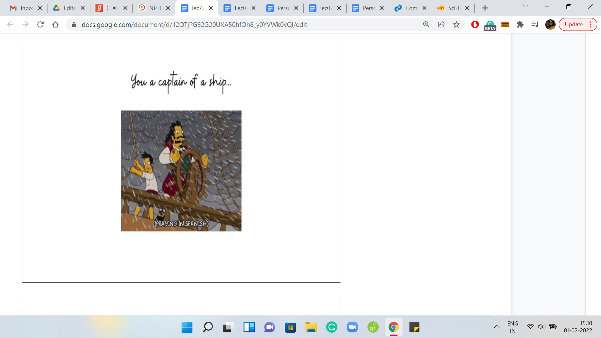 
 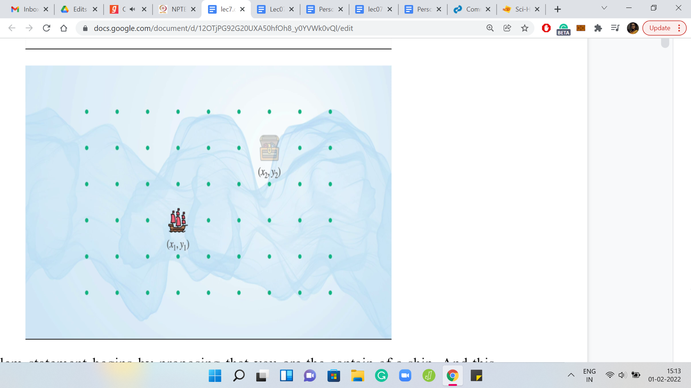
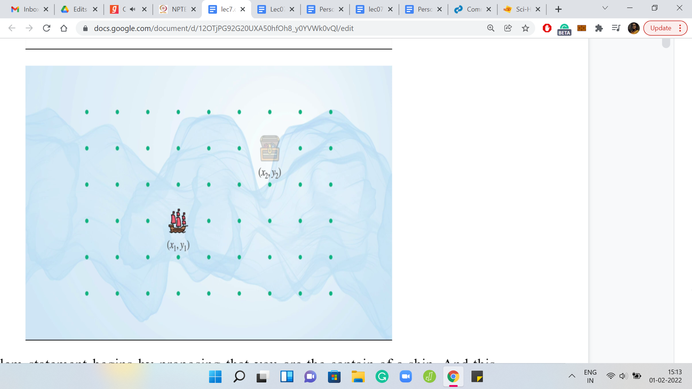
The problem statement begins by proposing that you are the captain of a ship. This picture here is quite appropriate because our task is to figure out if we can steer the ship to a particular destination in the presence of very windy weather. Let us take a closer look at what we are supposed to do. The very poetic concept of an ocean is modeled by simple cartesian coordinates in this problem. To begin with, your ship is at the location x1, y1, and your destination is at the location x2, y2.
In one step, you can move one unit to the left or to the right or up or down. You cannot make a diagonal move in a single step. That is how your ship is constrained to move. These are the instructions that you can give your ship if you had to go from where you are currently to where you want to go. It is quite straightforward.
Notice that it is the best you can hope for in terms of the number of steps that you need to expend. But if this was the entire story, this would probably be an implementation problem that we will have discussed last week. So, the twist is that, as I mentioned earlier, you are navigating the ocean in windy weather and the winds are pushing the ship around in different ways. You have to try and figure out whether you can get to the destination in the presence of these winds. How are the winds modeled? How are we given information about what the winds are doing?
(Refer Slide Time: 02:50)
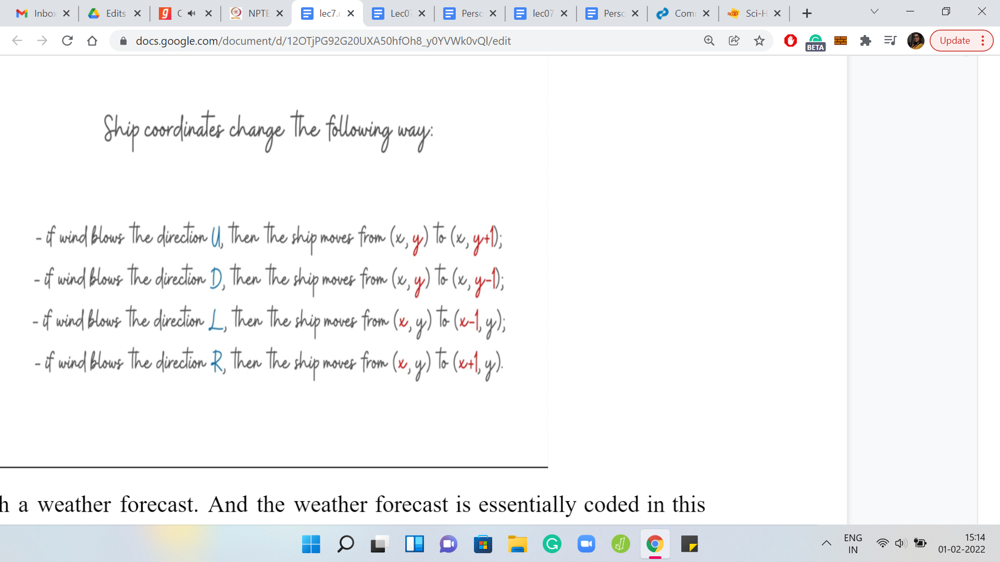
This is through a weather forecast. And the weather forecast is essentially coded in this language. It is a string, which has ‘n’ letters and each of these letters is one of these alphabets here. It is either ‘U, D, L, or R,’ signifying whether the wind is going to blow the ship in the east direction, or west or north or south. The winds also, in one day, will push the ship one unit in one of these directions. That is the behavior of the wind. Let us try to understand this through an example.
(Refer Slide Time: 03:35)
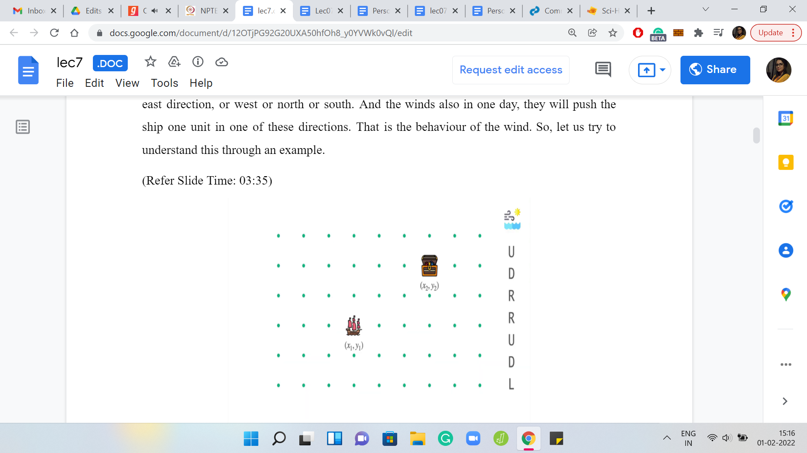
We have here the initial state of the ship. We also have the weather forecast for the next 7 days. I was talking about one step so far. But in the language of the problem statement, these steps are codified as days. So, I will talk about days and steps interchangeably. With this one-week weather forecast, let us see what the ship will do if it has no other forces acting on it. Right now the captain is sleeping peacefully and is not steering the ship in any way. So, the winds alone will have the following effect on the ship.
(Refer Slide Time: 04:02)


On the first day, the ship will move north one unit. On the second day, it will simply come back down to its original position. On the third day, it will move one unit to the right. On the fourth day, it will again move one unit further to the right. On the fifth day, it will go up. On the sixth day, it will come back down. Finally, on the seventh day, it will move one unit to the left. You can see that the net effect of all of these movements is that the ship moved one unit to the right of where it was originally.
(Refer Slide Time: 04:11)
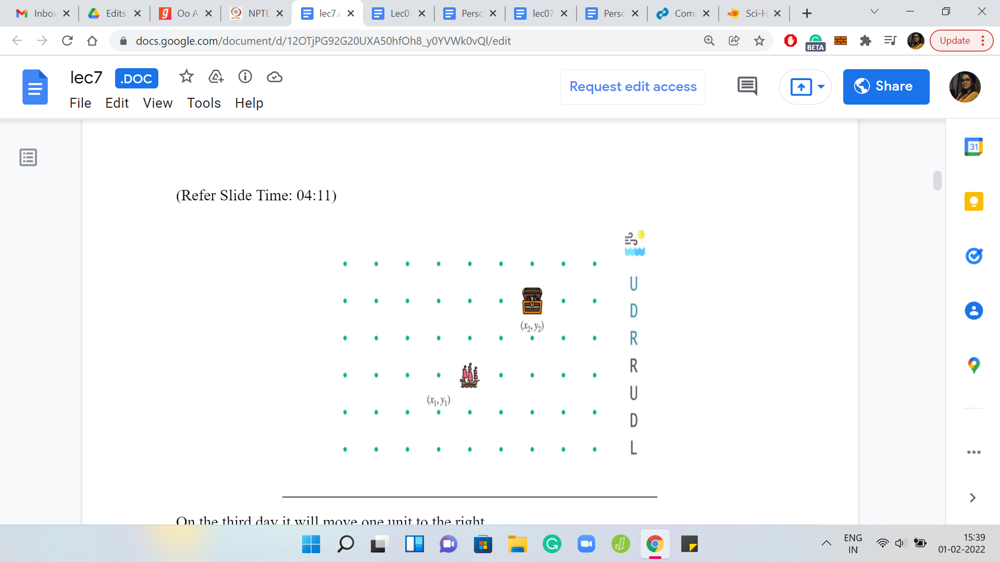 


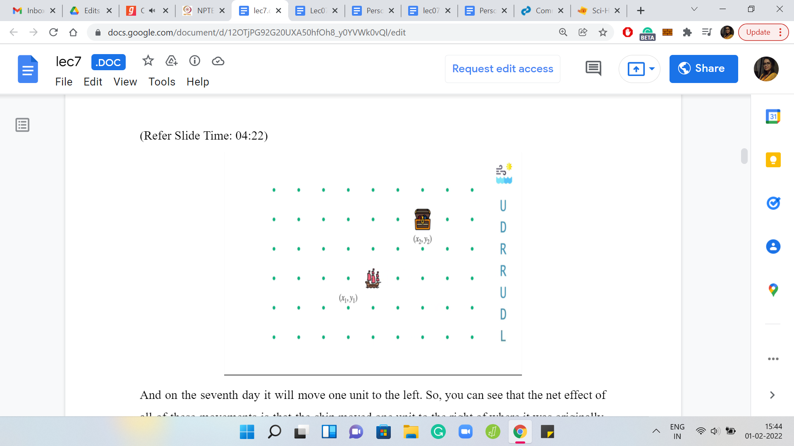
Let us see how these instructions from the weather interleave with actual steering attempts from the captain. While the winds are doing their thing, let us say that the captain has now woken up and decided to steer the ship in some meaningful way. On the first day, the winds are blowing towards the north. Let us say the captain tries to leverage this and also pushes the ship in the northern direction. This will have a compounding effect. These moves are going to add up, and the ship overall will end up moving two steps to the north.
(Refer Slide Time: 04:45)


 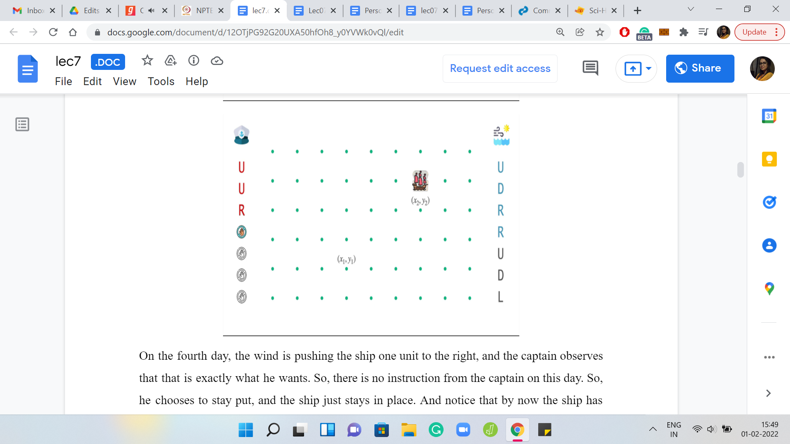
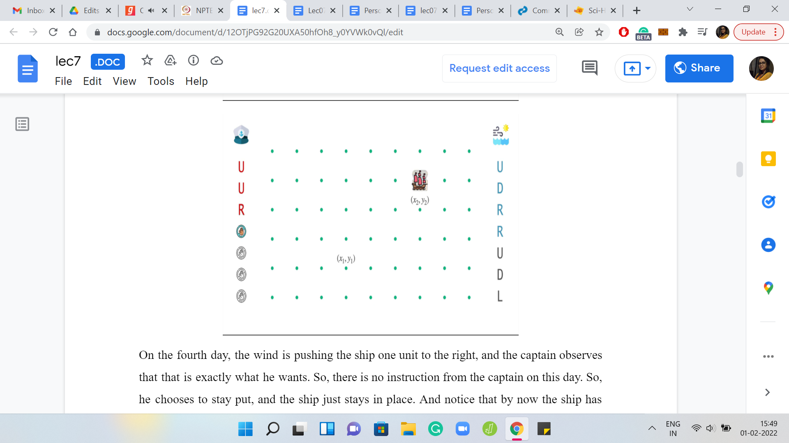
On the second day when the wind is trying to push the ship back down, the captain tries to apply an opposing force where the instruction from the captain is to go up. This up and down will have sort of a canceling effect. The final outcome is that the ship will stay put at its location at the start of the day. It does not have any net movement.
On the third day, both the captain and the winds are pushing the ship rightwards. So, the overall effect is that the ship moves two units to the right. On the fourth day, the wind is pushing the ship one unit to the right, and the captain observes that this is exactly what he wants. So, there is no instruction from the captain on this day. He chooses to stay put, and the ship just stays in place. Notice that by now the ship has actually arrived at its destination.
What you do from here will turn out to be not so relevant to the mechanics of our problem. One option is to just go back to sleep and be at the mercy of the winds again. This will just mean that the ship will drift around based on the instructions from the weather forecast.
On the other hand, if you really wanted to stay put at the destination for longer, then you could simply issue instructions that negate the impact of the wind, and you can stay at the destination for as long as you want. Both possibilities are definitely feasible. But as I said, they will not be as important as getting to the destination in the first place, which will be the main focus of our problem.
The next thing I want to talk about is the weather forecast. Here, for instance, we have the forecast for the next 7 days. But if you wanted to know what happens in the next month or the next year, then how do you get that information? This may be important because perhaps it is not possible to get to the destination within 7 days. So, you might need to have an understanding of how the weather will behave beyond these seven days.
(Refer Slide Time: 07:27)


What we are given in the problem statement is that the weather forecast is periodic, which means the same behavior will keep playing out again and again. In some sense, you have a weather forecast, which is indefinite. You know exactly what is going to happen any number of days from now, just by maintaining this information cleverly in your code. We will come to that later in a little more detail. But for now, know that in principle, you have all the information that you could possibly want about how the winds are going to behave over the coming days.
(Refer Slide Time: 08:07)
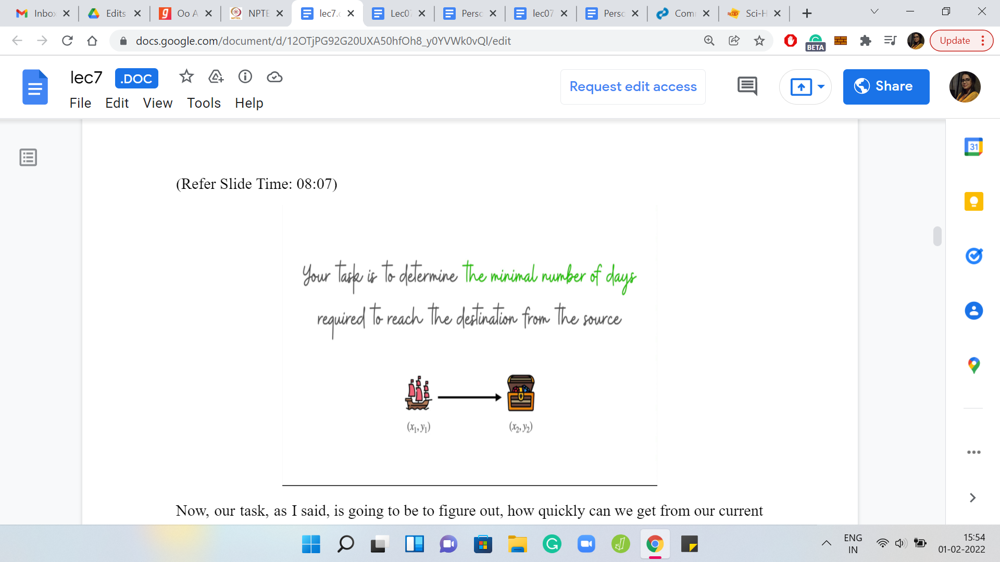
Our task is going to be to figure out how quickly can we get from our current position to our ultimate destination? Specifically, we want to find out what is the minimum number of days that we need to reach the destination in the presence of these winds, as they have been described by the weather forecast.
(Refer Slide Time: 08:27)
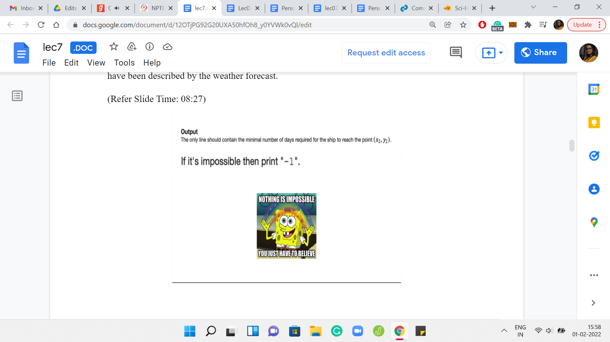 
If you look at the actual output format, and this is a screenshot from the problem statement, it says exactly what you would expect. The output has only one line and it prints the minimum number of days that are required for the ship to reach x2, y2. But then it has this interesting follow-up line which says ‘if it is impossible, then print -1.’ This line right here suggests the possibility that our task may, in fact, be impossible in some situations.
It is perhaps conceivable that there are choices of starting points and destinations, and weather forecasts, which are such that the forces of nature are so strong that no matter how clever or how hard working a captain you are, you simply cannot get the ship to where it should be.
This is a good time to pause and think about whether you can come up with such a concrete example or is it just a trick statement here. Maybe, the problem setters thought that this would be a cute thing to add just to throw you off a bit. Take a pause and try and play around with some examples and see if you can come up with one that is, in fact, impossible. Come back when you are ready.
Hopefully, you had a chance to think about this. One possibility is that you are in the ‘what is impossible camp.’ Maybe, you believe that no matter how adversarial the situation is, if you are determined to get the ship to where it should be then you will manage to do it. However, it turns out that this is not a trick sentence. There could be scenarios, which are, in fact, impossible.
(Refer Slide Time: 10:09)
 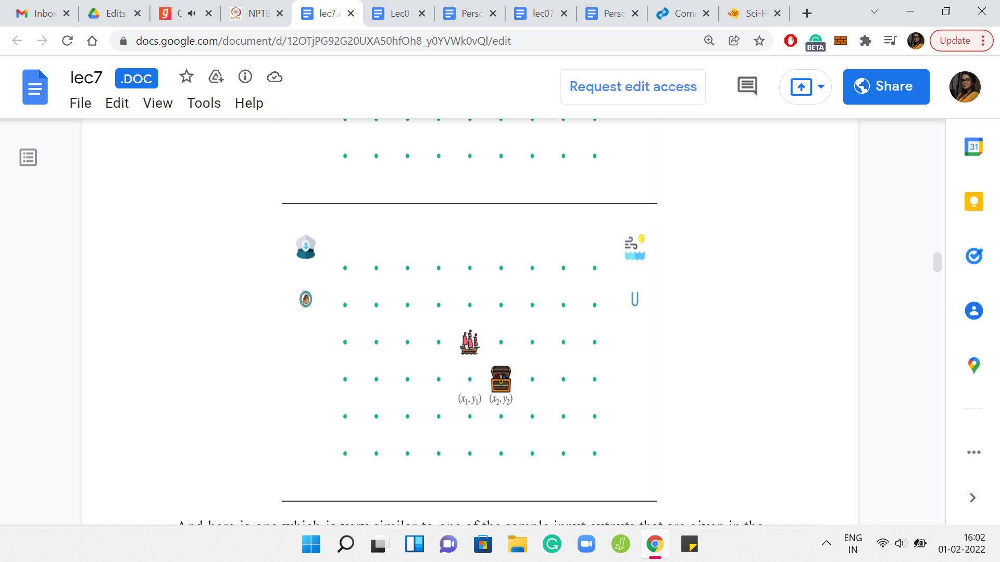
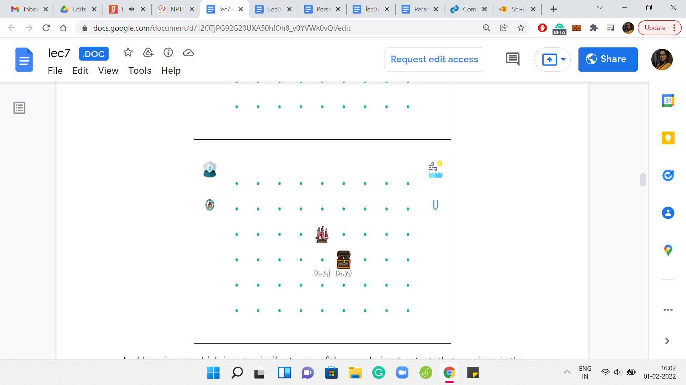
Here is one which is very similar to one of the sample input-outputs that are given in the problem statement. Here is a situation where the ship looks temptingly close to its destination. It is just one unit off to the left, or to the right, depending on how you are looking at it. The weather forecast is also very simple. It says that the winds are always blowing northwards. Since the forecast is periodic, we know that we are forever stuck with a wind that is pushing the ship up north.
Let us think about why the ship under this circumstance will never reach the destination. For this, let us try and analyze what are the possible things that the captain can do. The first possibility, for instance, is that the captain can choose to abstain and say that, ‘okay, we will not do anything.’ In this case, the wind is going to take the ship one unit north, and what happens is that you are truly doomed from here.
The reason for that is in all future steps, your ship is only going to gain, I guess, altitude is not the word, but it is either longitude or latitude, one of these things. Basically, the ship will either stay where it is, that will happen when you issue a negating force to what the wind is doing, you try to move downwards, or you just move either North or Northeast or Northwest. But you are never coming back. You will never come back to thinking of this as rows and columns, you will never come back to the ith row if that is where you started out. So, if you decide to do nothing, then it is very clear that there is no looking back.
(Refer Slide Time: 11:56)


The other thing that you could do is that perhaps you could try to go North. It seems even more silly, to be honest, than what we did in the previous case. If you choose to move north, then you are only helping the wind in taking you further away from your destination. You just drifting away even faster. It will clearly not work for very similar reasons once again.
The other thing you can do is try to move left, which again, intuitively is moving away from where you need to go. This time, you will move northwest. Again, it is the same argument as before. You are going to continue to either stay in the (i+1)th row or actually move even further up and further away, in particular.
(Refer Slide Time: 12:53)

The two remaining possibilities are that you either move down or you move to the right. If you move downwards, then all that happens is that you stay where you are because you have negated the wind. If you move to the right, which seems to be the most natural thing to do because that is where you are supposed to go, in the absence of the wind, you would have reached at your destination, but in the presence of the wind, you just miss it.
So, you end up going upwards instead of going to the right. All in all, no matter what you try to do, you are not reaching your destination. Here again, with the last case, the same argument applies with regards to once you have shifted one row upwards, it is just going to be downhill from there, or maybe uphill.
What I am saying is that it is, basically, a lost cause. Either you stay where you are permanently, or if you have any movement at all, it is going to be damaging. It is just going to make you drift further away from your destination. The closest you can be is to stay put. But that is not what we are analyzing here. We want to reach the destination. Overall, this tells us that these impossible scenarios do exist, and whatever strategy we come up with should have the ability to recognize them.
How do we go about something like this? If you remember the last problem that we discussed, The Meeting Place Cannot Be Changed. One question that we asked ourselves was: Are ‘k’ seconds enough to get everybody to meet at some common point? This turned out to be an insightful question to ask, which eventually led us to our solution.
(Refer Slide Time: 14:45)

Here we will ask an analogous question, which is essentially going to be: Are ‘k’ days enough for us to reach the destination? If there is a solution at all, it is going to require some number of days. We will show that if there is a solution, then there is also a solution, which is at most something. This will be an upper bound that we identify so that we have a well-defined search space. We say that either it is an impossible situation, or the possibilities are really limited to this range for the value of an optimal solution.
Once we do that, notice that we can again binary search on this range. Because if you can get to the destination in at most ‘k’ days, then you can get to the destination in at most ‘k’ prime days for any ‘k’ prime that is larger than ‘k.’ That gives us the sort of a binary searching strategy, just like before.
If the answer to this question: ‘Can we reach the destination in k days?’ is yes, then we need to challenge ourselves with smaller values of ‘k.’ But if the answer is no, then we know that we need more time because we certainly cannot do it with fewer than ‘k’ days if we cannot do it in ‘k’ days already. In that case, we will search for values larger than ‘k.’ The overall template is the same as last time.
But we do need to fill in a couple of very specific blanks. The first one is identifying the scope of the search space. So, we will have to think about what is an upper bound on the size of any optimal solution, if one exists. The other thing is, how do we answer this question? When we are probing the midpoint of whatever our current search space is, we need to ask ourselves, are so many days enough?
Based on whether the answer to that question is yes or no, we will prune our search space appropriately. These are the two things that we need to figure out. Let us address the second question first. Let us talk about how to figure out if we can reach our destination in ‘k’ days.
(Refer Slide Time: 16:58)


To address this question, let us just draw up an abstract scenario. Here you can see the ship in its initial location. You have the destination, and you have the weather forecast as usual. To consider the possibilities of what can happen over a period of ‘k’ days, it is useful to just split up the impact of the weather conditions, and the impact of the captain’s instructions. You know that the weather forecast is an inevitable factor in what happens over the next ‘k’ days. Let us consider that first.
We let the wind do its thing and just keep track of how the coordinates are going to change as the weather forecast plays out. You can do this by simply looking at the code of the forecast and figuring out how much you have to adjust the ‘x’ and ‘y’ coordinates of the ship in aggregate.
In some sense, you know where the ship will end up. If the captain was sleeping throughout these ‘k’ days, if there were no instructions from the captain at all, then you would be at this location that we are for now calling x3, y3. The question is, can we come up with criteria of when the destination is accessible? Given we know that we are going to take a hit of at least so much in our x and y coordinates. Of course, what we are still left with, we have some role to place yet. We have to figure out if we can do some course correction by exploiting the fact that the captain can do some work.
But how much course correction is going to be possible? Is it going to be enough for us to reach the destination? Please pause the video here and think about if you can come up with some criteria for whether the destination is reachable or not. Given that the unavoidable impact of the wind takes you to x3, y3 if you do nothing. Hopefully, you had a chance to think about this.
Note that the thing we need to make precise is the following. We want some kind of clean criteria that will help us identify exactly which points are accessible, given that we start at the starting point and the wind brings us to x3, y3, if considered stand-alone. Also, given the fact that we still have the opportunity of ‘k’ days worth of course correction across both coordinates combined.
When you put all this together, you realize that the points that are ultimately accessible to the ship, starting where it started and given all of these other facts are precisely those points, which have a Manhattan distance of at most ‘k’ from x3, y3. By Manhattan distance, we just mean all points that can be reached by a perturbation of, let us say, ε1 across the ‘x’ coordinate and a perturbation of ε2 on the ‘y’ coordinate, such that the ε1+ε2 is at most ‘k.’
You are allowed to move along the x and y coordinates in such a way that the total movement does not exceed ‘k.’ That is, sort of, exactly what we can afford to do. As we were saying earlier, whether you do the compounding of the instructions from the wind and the instructions from the captain on a day-to-day basis, or whether you separate them out and consider the effect of the wind first, and then the effect of the captain’s instructions, the ultimate point where you land up is going to be the same.
This reordering of the instructions is useful because you can first focus on x3, y3. You know that that is where you are going to reach by virtue of the weather forecast. Now you can consider what can possibly happen based on the remaining ‘k’ instructions. What can possibly happen is that you can only move around in this sort of ‘k’ neighborhood of x3, y3, but this is not the standard ball around x3, y3. As I said, everything that is accessible through a total movement of ‘k’ units across both coordinates.
Hopefully, that is clear. Of course, in this particular example, you can see that our destination actually does fall in this region that we have identified and is, therefore, accessible. This is only an abstract example. I have not even put in a specific weather forecast or specific numbers. But that is not important. I think what is crucial is just being able to identify this condition. To recap the actual condition, what we are saying is the following.
(Refer Slide Time: 21:58)
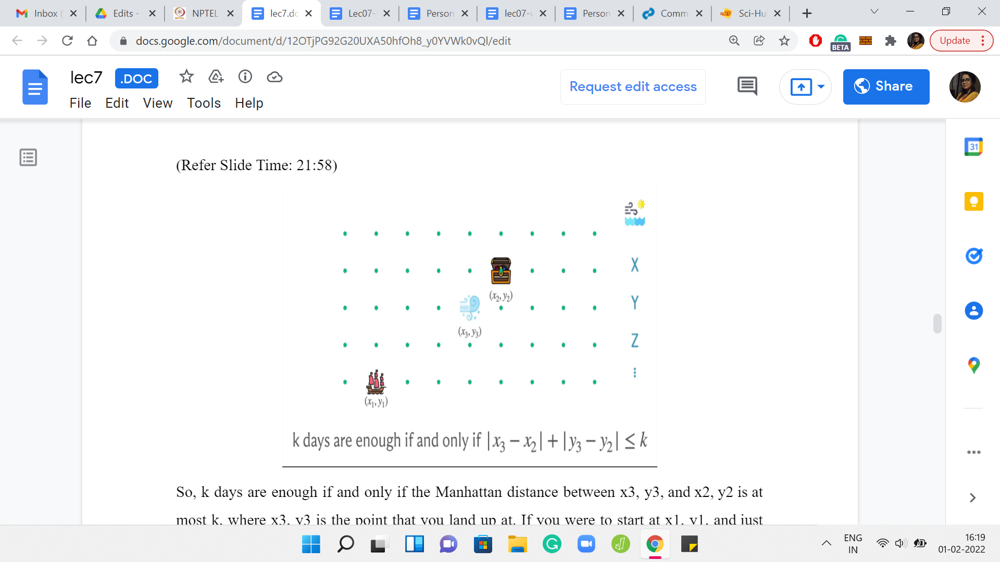 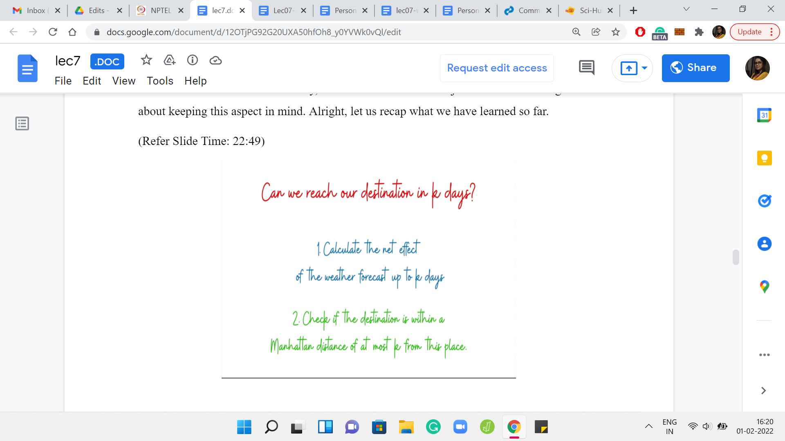
So, ‘k’ days are enough if and only if the Manhattan distance between x3, y3, and x2, y2 is at most ‘k,’ where x3, y3 is the point that you land up at if you were to start at x1, y1, and just obediently follow the weather forecast for ‘k’ days. Once again, we will have to figure out how to write this in code. Because ‘k’ could very well be more than ‘n,’ which is the number of days for which you have the weather forecast.
You have to do a bit of a circus to do the periodic exercise to figure out exactly how much movement is there. Fortunately, it is not hard at all. It is just a matter of being careful about keeping this aspect in mind. Let us recap what we have learned so far.
Remember, we were trying to address the question of whether we can reach our destination in at most ‘k’ days. In particular, we wanted to come up with a procedure that will help us identify whether the answer to this question is yes or no. We said at a high level that it is useful to separate the impact of the weather forecast from the captain’s instructions. So, as a first step, what we did was we calculated the net effect of the weather forecast up to ‘k’ days on the coordinate x1, y1, and this brought us to the coordinates x3, y3.
In the second step, we just had to check if the Manhattan distance between x3, y3, which is where we land up under the influence of the wind, is at most ‘k’ from x2, y2, which is our destination. If it is, then the answer to the question is yes. If it is not, then the answer is no. By now we have a subroutine, which can tell us if ‘k’ days are enough or not.
(Refer Slide Time: 23:52)
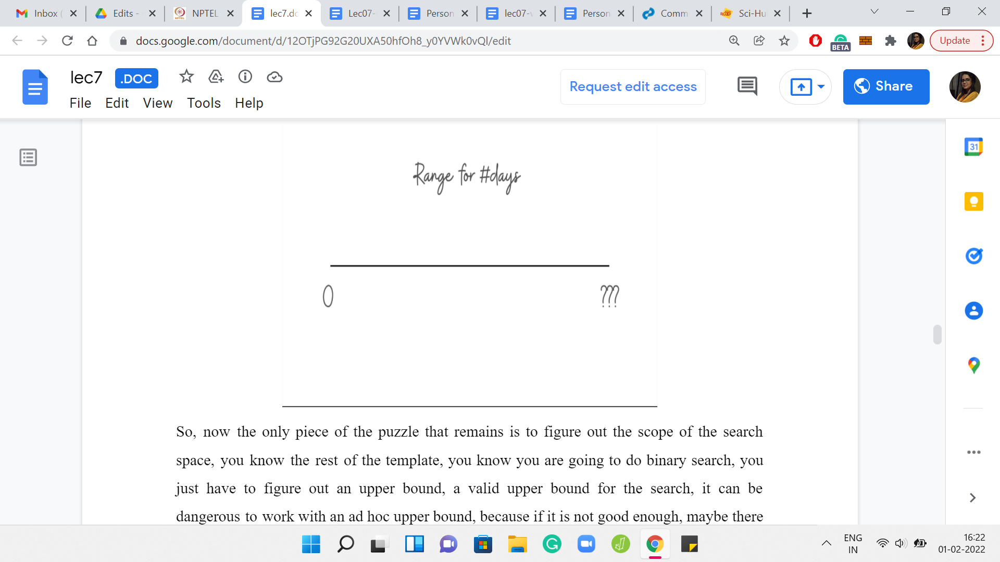
The only piece of the puzzle that remains is to figure out the scope of the search space. You know the rest of the template. You know you are going to do a binary search. You just have to figure out a valid upper bound for the search. It can be dangerous to work with an ad hoc upper bound, because if it is not good enough, maybe there was a solution that was bigger than the upper bound you were experimenting with, but you just missed out on it.
To address this, what we are going to do now is to come up with a guaranteed upper bound, which assures us that if there was a solution at all, there would have been one with cost, at most, this much. It is safe for us to restrict our search space to be 0 to that quantity, whatever that quantity is. I will also say that when you are solving a problem like this in a contest, then coming up with a provable argument of the sort that we are just going to see in the next few minutes may not be completely necessary.
If you have some intuition based on the limits of the problem, you could just try to give it a shot with that. Or you could simply try and shoot for the largest upper bound that the time constraints will allow. At this point of solving the problem, we are probably reasonably confident that our overall binary search template is correct. We also know how to handle the probing questions of whether ‘k’ days are enough.
The only issue left is, what upper bound should we use? We can do a quick back-of-the-envelope calculation to estimate the amount of time that we need to answer the probes. Then we can actually reverse engineer what is the largest limit that we can afford to have for our code to not timeout. Then we can simply use that limit. So, if we are short on time, you can use tricks like this. But it turns out that there is a very nice argument, which says that you can work with a particular limit. Let us try to understand that a little bit.
(Refer Slide Time: 26:03)
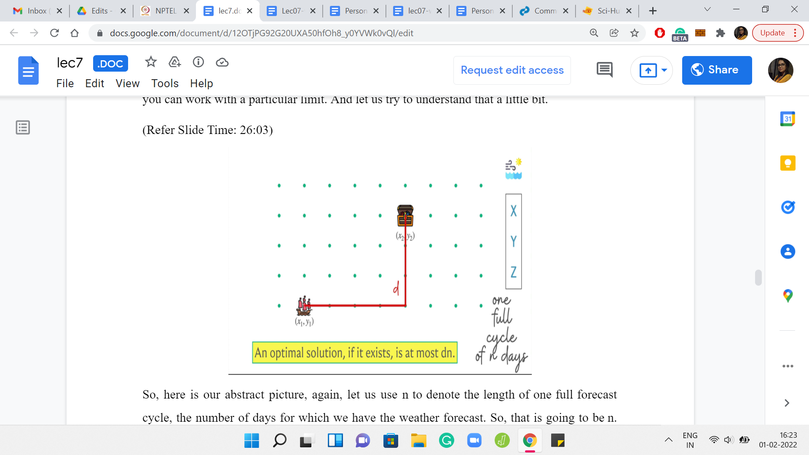
Here is our abstract picture. Let us use ‘n’ to denote the length of one full forecast cycle, the number of days for which we have the weather forecast. Let us also use ‘d’ to denote the Manhattan distance between the original source and destination points. That is what we have. The claim is going to be that if this is not one of those impossible scenarios, then there is a solution whose cost in terms of the number of days is at most d*n, and d and n are as we just defined.
Let us try to argue this a little bit. The intuition here is that with every cycle of the movements of the wind according to the forecast, you must somehow reduce the Manhattan distance by at least one. If you do not have a strategy to do that, then you are basically never going to get to the destination in the first place. If you think about it a bit that is what was happening when we were discussing the one impossible scenario example earlier.
In one cycle of the weather forecast, which was just essentially one day, we were not able to reduce the Manhattan distance between the source and the destination. Remember that they were one unit apart. We saw that no matter what we did, they remained one unit apart, or they drifted even further apart. That is the kind of spirit of the argument that we are going to make right now as well. Let us get to it.
(Refer Slide Time: 27:47)

Suppose we do have a solution. The explicit claim we are making is that there is some sequence of ‘n’ instructions that the captain can give, which, if given along with this weather forecast that has been given to us in the first place, when is combined, then the Manhattan distance between the source and destination strictly decreases. That is the claim. So, again, just to recap, because this was quite a handful. What we are saying is that if there was a solution, that means there is a way of getting closer to the destination in one cycle of ‘n’ days.
To see that this is true, let us say that suppose this was not the case. That no matter what sequence of instructions the captain comes up with, and there is going to be 4n possible such sequences, for each one of them if we try to run that sequence of instructions in one cycle, then we would be left either where we were, or we would be left further away in terms of Manhattan distance from the destination.
Suppose this is the case. No matter what you do, you either stay where you were, or you stay within the same Manhattan distance of the destination, or your distance from the destination in fact increases. One of these two things happens. If this is the case, then I want to argue that you cannot have a solution. No matter what solution somebody attempts, you are either going to not make any progress or if at all, you end up moving, then you keep drifting further and further away from the destination. Let us try to just get some intuition for why this is true.
(Refer Slide Time: 29:41)

Sppose, somebody did try to come up with a solution. Even though we know that no matter what set of instructions you use in each cycle, the total amount of movement that you experience, at least in the first cycle, we know by assumption that our Manhattan distance from the solution has not reduced. In particular, it is either stayed the same or it is increased. Tthat is what is going to happen when the ship has finished executing all of these instructions from the first cycle.
(Refer Slide Time: 30:14)
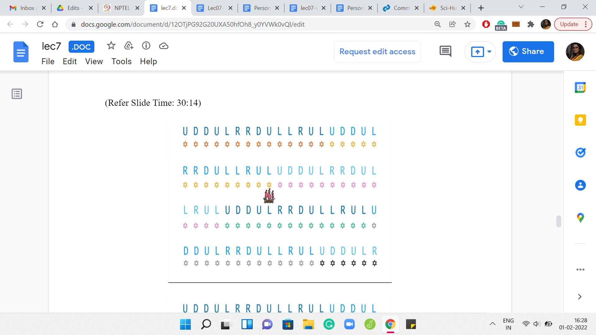 
 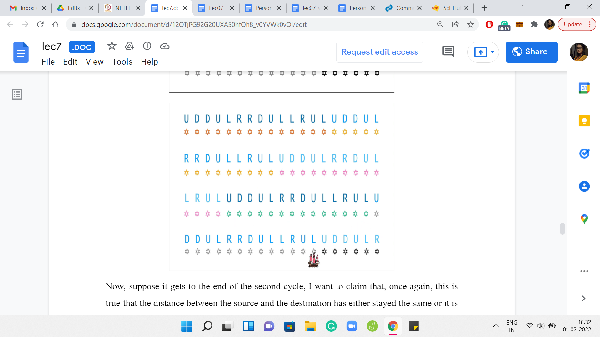
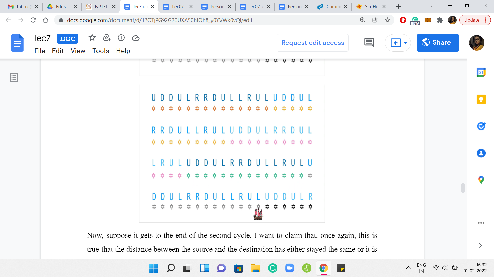
Suppose it gets to the end of the second cycle. I want to claim that, once again, this is true. That the distance between the source and the destination has either stayed the same or it is increased, but it could not have possibly decreased, and so on and so forth. Bcause this just keeps happening, you never actually get to the destination. To understand this a little bit better, let us make the arguments somewhat more explicit by working with actual coordinates.
(Refer Slide Time: 30:41)
 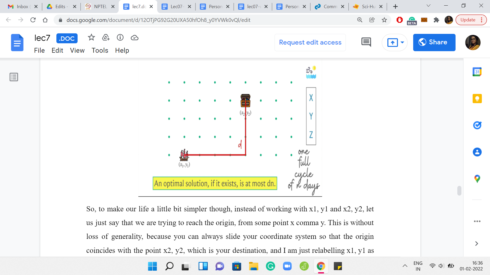
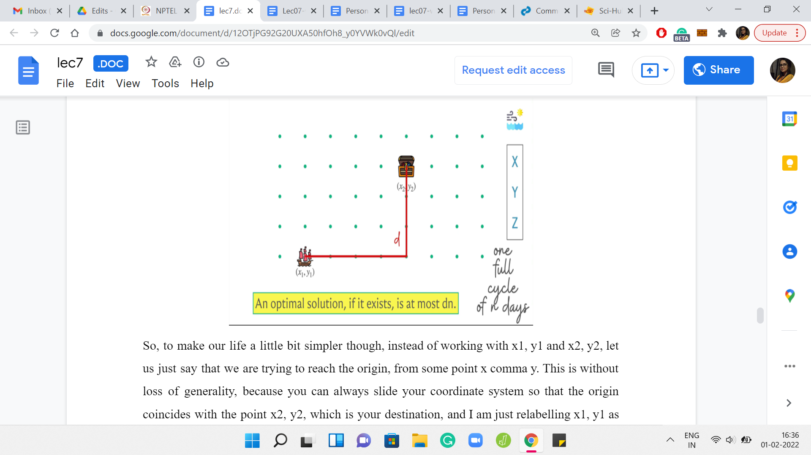
To make our life a little bit simpler though, instead of working with x1, y1, and x2, y2, let us just say that we are trying to reach the origin from some point x, y. This is without loss of generality because you can always slide your coordinate system so that the origin coincides with the point x2, y2, which is your destination. And I am just relabelling x1, y1 as x, y.
Hopefully, this part is okay, just makes the notation a little bit cleaner. Notice that the Manhattan distance of any point from the origin is just the sum of its x and y coordinates. That comes in useful as well. Notice that in the first cycle of ‘n’ days, let us say we get from x, y to x’, y’, what we know is that x’ + y’ is at least x + y. Right. Because by assumption, we have said that no matter which of the 4n sequences you deploy, you are not going to reduce the Manhattan distance from the destination.
We know that we are at least as far away as before. Let me just try to write x’, y’ as ε offsets from the original point x, y. So, we can say that x’ is x + εx, and y’ is y + εy. Note that our information about x’ + y’ being at least x + y simply translates to εx + εy being at least 0. That is what we have in the first step. What is interesting to observe is what happens in the first and the second cycles combined. Let us say we go from x, y to x’‘, y’’.
Let us say we get there by deploying the first sequence of instructions, the orange ones, and then these green ones. This picture of just being a bit miserly with space may be a bit misleading. What is going on is that to get from x, y to x’‘, y’‘, you essentially go to x’, y’ first, and then from there, you deploy a fresh set of instructions, which are these green ones. We know that if we had deployed the green instructions on just x, y directly and nothing else, we would still be left no closer to the destination.
Let us see if we can use that to say that even x’‘, y’‘, which is the orange and the green instructions combined, are also no closer to the destination compared to when we started out. So, let us write out x’‘, y’’, and let us say that the effect of the green instructions was ε offsets once again, but this time it is the green epsilon. Let us say that if you had applied the green sequence of instructions on x, y, then you would have landed up at x + εx and y + εy, with these epsilons being the green ones.
Then if you apply the green instructions to x’‘, y’‘, then what you get is this point here, which is x’ + εx and y’ + εy. Now let us substitute for x’ and y’, in terms of x + εx and y + εy. But this time, it is the orange epsilons from before.
Notice that we essentially have offsets. We have understood x’’ and y’’ in terms of offsets from x, y, but we also know that the net effect of these offsets is non-negative. What we really want is the total offset to be negative to be able to come closer to the destination.
Notice that even after two cycles, that is not happening. It is the exact same argument to say that it is not going to happen after three cycles or four cycles, or after any number of cycles. If it was really the case that no matter which set of instructions you apply, you come no closer to your destination.
(Refer Slide Time: 35:06)
 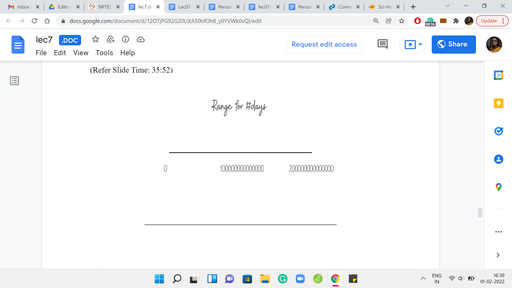
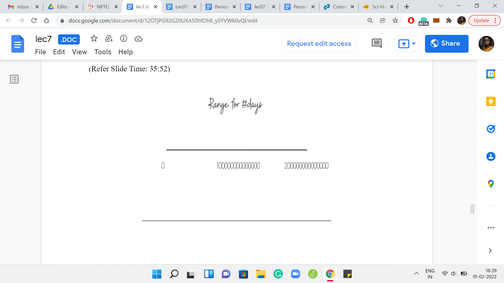
We know that if there is a solution, then there must be a sequence of instructions, which is such that if you combine it with the weather forecast, then it strictly reduces the Manhattan distance between the source and the destination. Now just keep repeating this argument to see that you must have a sequence that brings you to the destination in, at most, d*n steps. Because in every cycle, you are able to reduce the Manhattan distance by at least 1 by applying the appropriate set of instructions. So, you will never need more than d*n many steps to actually get to the destination.
If you look up the actual limits in the problem for ‘n’ and so on, I think it turns out that your upper limit is some 2*1014 or something like this. In any case, at some fixed upper bound, as I said, you do not have to have either a bound that is so precise, nor do you need an argument that is this detailed. You just need to have some either overall intuition for what is going on. So, that you arrive at this d*n as sort of a bound, roughly speaking, or you can, as I said, employ a trick to just let the bound be as large as it can possibly be. Just work with that. That should be perfectly fine.
(Refer Slide Time: 36:35)


Let us just recap how the binary search will work. As usual, you get to the midpoint. If the current midpoint is, let us say, some ‘k,’ we ask ourselves: Are ‘k’ days going to be enough to reach the destination? If ‘k’ days are indeed enough, then we need to challenge ourselves to find smaller values of ‘k’ that are probably better, but we can definitely, confidently eliminate the top half of the search space.
Similarly, if ‘k’ days are not enough, then we know for sure that all values of ‘k’ that are smaller are useless for us because we know for sure that none of those are feasible. So, we can just focus on the top half of the search space. With that, notice that we are pretty much done. You might be wondering about when this algorithm returns a verdict of impossible for the task at hand. Notice that it will happen when each of your probes individually returns an output of infeasible.
You try with the first midpoint: it says, well, these many days are not enough. You try with a larger value, and it is still not enough and you try with a larger value, and it is still not enough, and so on and so forth. You keep doing this till the very end. If every output is ‘this is not enough,’ then at that point, you know that you have exited the binary search with some sort of a failure to discover a ‘k’ in the range that we had stipulated, which would work for you.
But since, we have argued already that if there is an answer at all, then there is an answer in this range. This is sufficient evidence to conclude that your task was indeed impossible. Of course, if any one of the probes says feasible, then you certainly have at least one valid answer. Because of the nature of the binary search, by the time you exit your ‘while’ loop that is controlling the binary search, the value that you have is, in fact, the optimal number of days. That, I think, brings us to the end of our discussion of the overall approach.
It is now time to roll up our sleeves and write some code. I think the implementation of this is fairly straightforward, and structurally, very similar to what we saw last time. But one detail to keep in mind is implementing the periodicity so that you can do these little operations in terms of figuring out if ‘k’ is feasible or not, and things like that, comfortably. We will get to that in just a moment. But this is your standard reminder that if you wanted to try this yourself, then please give it a shot and come back when you are ready. In the meantime, let us just go ahead and talk about the implementation.
So, we will be looking at some Python code here. The reason is that, first of all, the official editorial for this problem has some nice C++ code already. I recall thinking that it was quite readable. I think you could follow that if you primarily work in C++. The approach is exactly the same as what we have here. There may, of course, be a few very minor implementation details that vary but the algorithm is essentially what we have discussed, so far.
The other thing is, this is a problem involving some fairly big numbers. I just wanted to demonstrate that you can do pretty well with a Python-based implementation as well. I think if you look at the problem history, you will see that there have been a number of Python-based solutions that have passed and we are going to look at one such.
(Refer Slide Time: 40:17)


To begin with, what we have here is just taking the input in. This is pretty standard. There is nothing unusual here. We take in the coordinates of the origin and the destination and store them with variable names that are consistent with our discussion, so far. We have x1, y1, and x2, y2. Then we have the length of the weather forecast that is an integer, and we have the weather forecast itself, which is a string with that many characters. We take that in as a string and call it ‘S.’
Now, let us just compute an array. This was essentially the analog of the prefix sums approach for keeping track of the periodicity of the weather forecast. What we want to do here is, essentially, pretend that we are starting at the origin and let the wind drag us around wherever it needs to, based on the weather forecast. This code here is exactly like the code version of the slide where we were explaining what the forecast means, what the different letters mean.
Based on whether you are going up, down, left or right, you update the ‘y’ or the ‘x’ coordinates respectively. This will kind of be your memory of how you travel, based on the weather forecast alone. We are going to store in walk list your evolution as you go along. For instance, let us say the forecast was R, R, R, then the walk list would be 0, 0, to begin with, then you would append a 1, 0 because you have moved one step to the right and nothing on the y-direction, that is going to be the same.
The next element in the walk list will be 2, 0, and the element after that will be 3, 0. You could write down this piece of code here and run some print statements just to sanity check that everything works out the way you expect it to. This is the sort of place where there may be small typos like a + may become a - or something like that. It is always a good idea to sort of sanity check these things as you are writing the code so that once you have moved on from here, you are reasonably sure that there were no typos or bugs here. So this is some auxiliary thing, which will help us later.
(Refer Slide Time: 42:46)

The main drama, of course, happens with the binary search. That is what we want to talk about next. Here we have the initial limits. We worked very hard to come up with an upper bound on the search space. We said it is two times 1014. I am just being lazy here, 1015 is my upper bound, that should work just as well, of course. It is even more liberal.
Now, we have the usual binary search templates. As long as the left and the right endpoints of the search space have not converged to a single conclusive point, we have to keep going. That is the ‘while’ statement that declares the start of the binary search process. We compute the midpoint in the standard way as well, nothing fancy there.
Now we have to figure out: so, what is mid? Mid is our current guess for the number of days that we want to spend. The question we are asking ourselves now is: Are mid-many days enough to reach the destination?
Remember, the criteria for figuring out the answer to this question, we had to compute the Manhattan distance between the destination and the place that we will end up at if we were only at the mercy of the weather. We have to, first of all, compute x3, y3. Where do we end up if we just followed the weather forecast?
First, let us figure out how many cycles of the weather forecast are there inside mid and what is the remainder. So, you can use this built-in ‘divmod’ function to quickly figure out the quotient and the remainder. That is exactly how it works. If you give ‘divmod’ two numbers, let us say a and b, it is going to compute ‘a’/‘b.’ It is going to give you the quotient and the remainder. That is what we have done here.
(Refer Slide Time: 44:29)

 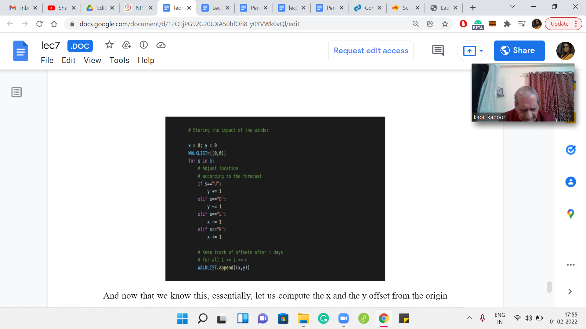
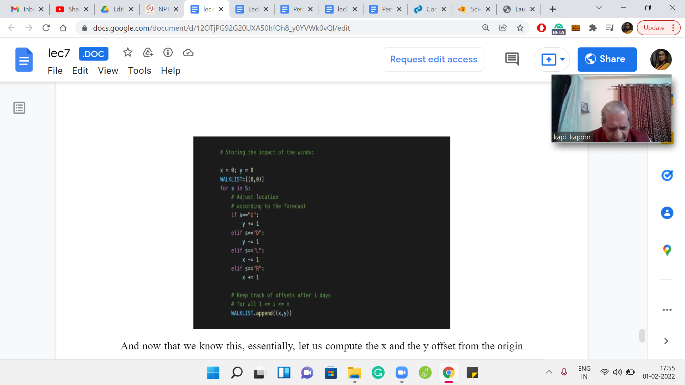
Now that we know this, let us compute the x and the y offsets from the origin point. We start at x1 and y1 respectively. And we know that we have to go through Q cycles of the weather forecast. We have an offset of Q*x and Q*y. If you go back, remember that x and y are essentially storing the total amount of offset that you experienced if you go through one cycle of the weather forecast.
That is what we are doing here. We are going through Q cycles. We are adding Q*x and Q*y. But now we also have ‘remainder-many’ days of the weather forecast that we experience. It is not a full cycle; it is a partial cycle. The offsets for all possible partial cycles are stored in the walk list. If you go to the ith element of the walk list, you will know where you would be ‘i’ days after experiencing the weather forecast starting from the origin, so that is essentially the offset. We add that offset to whatever coordinates we have computed, so far.
The expression that you see after the negative sign is essentially the values of x3 and y3, and the absolute difference between x2 and y2 with x3 and y3 respectively is essentially giving you the two components of the Manhattan distance between the destination and x3, y3, which is where you land up only under the impact of the event.
Let us recall what was the defining criteria for whether mid-many days are going to be enough. What we needed was for this distance that we have just calculated between the destination and x3, y3. We needed that distance to be at most mid. If that distance is at most mid, then we know that we can issue appropriate instructions to get to the destination, otherwise, mid-many days are not enough. That is what is happening in the next four lines of this program.
We are saying that if the total distance, which is given by the sum of the x and the y offsets, if that distance is at most made, then great. Then mid-many days are enough, and we should be more ambitious. We should aim to work with smaller values of mid and see if that would also work out. What we do is we take the right endpoint of the search space and bring it down to mid because larger values of mid are of no interest to us. We have already managed what we need with mid and now we are going to explore the lower half of the search space.
Of course, in the ‘else’ block, the exact opposite logic takes over, that mid many days are in fact, not enough. Because of exactly what we said, your distance is too much. Your distance from x3, y3 to destination exceeds mid. Whatever you can do within mid-days, you are not going to arrive at the destination. In this case, you know that mid is not enough. Your search base reduces to ‘mid+1’ all the way up to the end. You can bring the left endpoint all the way up to ‘mid+1.’ Okay. So, these are the two possibilities that play out here.
Notice that when the answer is impossible, you will never get into the first ‘if’ block. So, R will remain at 1015 or whatever. The left endpoint will just keep getting closer and closer to the R endpoint.
At some point, it will just collapse and become 1015 itself. That is in fact, what we have next, what we are saying is that if L becomes 1015 at some point. Then you could have also done this outside of the ‘while loop,’ it does not make a difference. If you have hit the upper limit, if L is equal to R is equal to 1015 then we know that it is impossible to reach the destination.
We also flag that for ourselves. So, if it is not impossible, then whatever the value of mid was, which is also the value of L and R when you have exited the loop, that is going to be the answer that you need to print. That is what is happening here. That actually is essentially the entire program. This was the binary search over the number of potential days that you need to get to your destination.
I hope you have a chance to try this out. If you have your own versions in either C++ or Java with similar documentation, then please remember to submit a pull request on the official repository. Other languages are also equally welcome, of course. Remember to attribute yourself and share your Discord username if you are in the community so that we can give you a shout-out.
So, we have one problem left for this week. That is going to be more about numbers. There is not so much of a story there. But it is also really fun. I hope you will join us back for the next and the last lecture of this series this week. Thanks so much for watching, and bye for now!